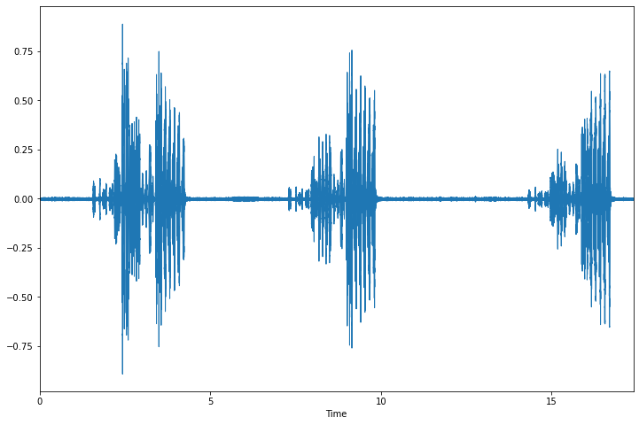
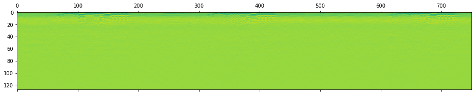
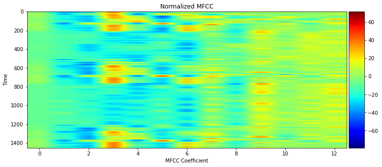
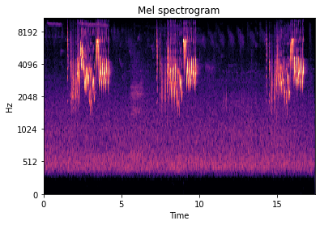
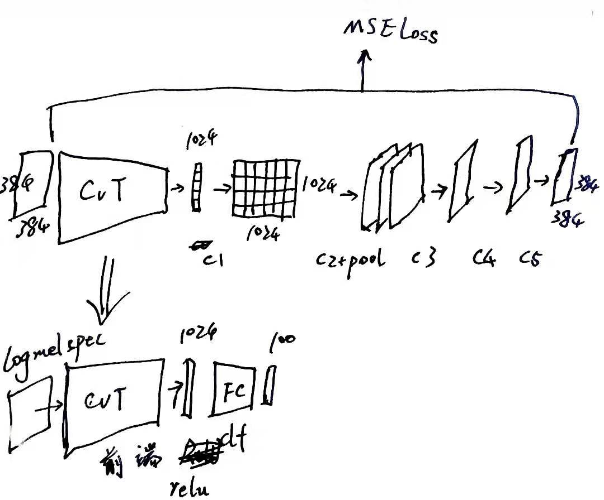

2021科大讯飞鸟鸣识别比赛总结
比赛介绍
赛事链接：科大讯飞：鸟类鸣叫声识别挑战赛
任务描述：鸟类鸣叫声识别挑战赛旨在增强自动鸟类鸣叫声识别技术，预测出每个测试音频中出现的鸟类物种。测试音频文件只包含单一的鸟类物种，预测在音频文件级别进行，不需要开始和结束的时间戳，属于单标签分类任务。
数据说明：训练数据集包含100类鸟声数据，存在类别不均衡，真实背景噪音。不可以使用外部数据及预训练模型，不可以进行人工端点检测。
相关比赛
Kaggle: Freesound Audio Tagging 2019
通用音频分类，多标签。
The audio data is labeled using a vocabulary of 80 labels from Google’s AudioSet Ontology, covering diverse topics: Guitar and other Musical instruments, Percussion, Water, Digestive, Respiratory sounds, Human voice, Human locomotion, Hands, Human group actions, Insect, Domestic animals, Glass, Liquid, Motor vehicle (road), Mechanisms, Doors, and a variety of Domestic sounds.
相关工作
Kaggle: Freesound Audio Tagging 2019 第一名方案：有完整的音频预处理步骤和模型训练，使用了作者自己写的轻量级深度学习框架argus。本方案使用了基于CNN的模型，它的数据增强的作用很大，值得参考。该方案是我们的最终提交版本的baseline。
FAT 2019 数据预处理流程：上述第一名方案所参考的特征提取流程。
Kaggle: Cornell Birdcall Identification 第一名方案)：使用了事件检测的流程，用了语音事件检测的预训练模型PANN。该比赛的任务似乎与本比赛不是很相符，因此没有采用。可参考相关博客。
Poland Birdsong Classification：给出了一套数据处理流程，指出了数据现存的一些问题。
观察数据

音频长度。坐标：采样点数-样本数。
分析： 需要考虑截取多长的时间片段作为输入。

特征提取
语音的特征提取主要使用MFCC（梅尔倒谱系数），实际应用中发现使用log梅尔谱系数的情况也较多，同时通过比较两种方法得到的频谱图，本次比赛我们采用的是log梅尔谱系数。建议阅读参考资料 博客园 - 数字信号处理–傅里叶变换 和 知乎 - 语音识别第4讲：语音特征参数MFCC。
MFCC
设计原理
根据人耳听觉机理的研究发现，人耳对不同频率的声波有不同的听觉敏感度。从200Hz到5000Hz的语音信号对语音的清晰度影响对大。两个响度不等的声音作用于人耳时，则响度较高的频率成分的存在会影响到对响度较低的频率成分的感受，使其变得不易察觉，这种现象称为掩蔽效应。由于频率较低的声音在内耳蜗基底膜上行波传递的距离大于频率较高的声音，故一般来说，低音容易掩蔽高音，而高音掩蔽低音较困难。在低频处的声音掩蔽的临界带宽较高频要小。所以，人们从低频到高频这一段频带内按临界带宽的大小由密到疏安排一组带通滤波器，对输入信号进行滤波。将每个带通滤波器输出的信号能量作为信号的基本特征，对此特征经过进一步处理后就可以作为语音的输入特征。
基本流程
连续语音 -> 预加重 ->分帧 -> 加窗 -> FFT -> Mel滤波器组 -> 对数运算 -> DCT（离散余弦变换）
（1）预加重：增强高频部分，即通过一个高通滤波器。频域变换为 $H(z)=1-\mu z^{-1}$，对应的时域变换为$y(t)=x(t)-\alpha x(t)$，这是实际计算时使用的。
（2）分帧：信号的频谱随时间变化，因此对整个信号进行傅立叶变换没有意义。假设频率在很短的时间内是平稳的，所以在短时间帧内进行傅里叶变换。
（3）加窗：以增加帧左端和右端的连续性。为了抵消FFT所假设的数据是无限的，并减少频谱泄漏。
（4）FFT：时域->频域
（5）Mel滤波器组：一系列滤波器，对不同频率设置不同的门限。
（6）对数运算
（7）DCT（离散余弦变换）：去除一些变化过快的系数，这些系数在ASR任务中没有帮助。
尝试的几种实现
librosa.feature.mfcc
1 | signal, sample_rate = librosa.load(wav_file) |
python_speech_features.mfcc
Note: 以上两种实现不包括预加重。
- 手动实现
1 | from scipy.fftpack import dct |
LogMelSpec
LogMelSpec与MFCC区别在于它没有DCT。可用的实现是librosa.features.melspectrogram。
1 | signal, sample_rate = librosa.load(wav_file) |
不同提取特征方式的对比
我们希望通过观察特征图像来判断那种特征更合适。参与对比的有mfcc的两种实现和logmelspec，他们的特征数量（即梅尔滤波器数量）均设置为128，实验代码详见notebook。通过对比，我们最终选用logmelspec作为特征。
wav时域图：
librosa.features.mfcc:
python_speech_features:
librosa.features.logmelspec:
数据增强
目前对语音信号的建模方式为：对整段音频信号提取频谱图，将频谱图视为图像，沿该图像的时间轴取一小段定长片段，放入处理图像的模型中，如CNN等。因此数据增强的对象是提取的特征图像，数据增强会包括截取、加噪等。特征的形状：dim_x=整个音频的帧数，dim_y=特征数量(滤波器个数)。
我们主要参考Kaggle: Freesound Audio Tagging 2019 第一名方案，所使用的数据增强包括以下步骤：
截取片段
由于鸟鸣在一段音频中的出现是周期性的，而数据集中音频的长度不一，因此对每段音频随机截取一小段（256帧）作为训练数据。长度不够256帧的要补齐。这一步有许多之的改进的地方：
（1）具体帧数可以更改，256帧是照搬的freesound方案，应该统计我们数据中每一声鸟鸣的长度是多少，截取的长度要综合考虑鸟鸣长度和鸟鸣间隔。
（2）不一定要随机截取，可以辅以端点检测和静音检测（题目中说不可以使用人工端点检测，但我们可以使用自动的），以避免取到不包含鸟鸣的片段。
（3）进而引发的思考是，截取片段的方法只用到了局部信息，没有用到全局信息（如鸟鸣间隔，鸟一共名叫多少声等等），因此后续我们尝试了序列模型（CNN特征提取器+LSTM后端）来利用全局信息。
随机缩放
freesound方案作者称该步骤提升显著，我们照搬了。
加噪
我认为有两种思路，一种是给图像加噪，即在特征图像上加矩形/sin函数形的mask；另一种是对原始音频添加白噪声/粉噪声等。
我们截至比赛截至时只尝试了freesound使用的矩形mask和我们增加的sin函数形mask。（但提交版本暂未加入sin函数形mask，也尚未实验验证其效果。）图像加噪的效果如下：
其他尝试：预加重
预加重是在提取特征之前对原始音频的处理，增强高频部分。librosa的logmelspec特征并没有预加重的步骤，因此我们手动添加。
1 | signal,sample_rate = librosa.load(fname) |
增加预加重后valid acc提升了1.89%（0.71->0.7389）。
模型
- Vision Transformer
- CNN
- CNN特征提取+序列模型（LSTM/Transformer）
Vision Transformer
考虑使用Vision Transformer的动机是，Kaggle Freesound和Cornell Birdcall都是2019或2020年的比赛，而Transformer是2019年底才流行起来、Vision Transformer更是2020年才出现，所以以前这些比赛获奖者所采用的CNN方案未必是当下最好的方案。因此我们决定直接上强有力的模型，Vision Transformer。对与分类任务，有ViT和CvT。
Vision Transformer原理讲解：知乎 - Vision Transformer , Vision MLP超详细解读 (原理分析+代码解读)
可用的开源实现：
timm：一个包含各种视觉模型的库。使用方法可以参考知乎 - 视觉Transformer优秀开源工作：timm库vision transformer代码解读。官方介绍：PyTorch image models, scripts, pretrained weights – ResNet, ResNeXT, EfficientNet, EfficientNetV2, NFNet, Vision Transformer, MixNet, MobileNet-V3/V2, RegNet, DPN, CSPNet, and more。
vit-pytorch：一个包含各种Vision Transformer的库。
验证性实验
为了测试ViT的可用性，先在Kaggle猫狗分类数据集上跑了ViT，准确率为~0.6，这并不高。在我们的Bird 4k数据集上（为方便调试取了一个小数据集，大小为4k，由每类别随机取等数量的样本得到）上得到的准确率为~0.02。
为了测试CvT的可用性，先在通用图像分类数据集caltech256上跑了CvT，准确率为~0.15。
预训练模型
Transformer是在使用了预训练后才大放异彩（BERT），因此这里我们也考虑预训练。因为没有找到现成的Vision Transformer在图像或者在语音数据上的预训练模型，我们打算自己写预训练。能想到的预训练的方法有两种：
自编码器。这是非常符合直觉的，但可能不好训练，因为要恢复的内容太多，CvT可能会很复杂。
预测Mask的任务（像BERT那样）。训练起来可能会更容易（因为预测的内容只是局部），但关键是设计的预测任务要确保合理有效、能帮到后面的分类任务。
首先我们为CvT设计了自编码器：
（上面是预训练模型，下面是分类模型）
自编码器的解码器目前使用了一个直觉设计的CNN，这里有修改的空间。
实验结果：
对于caltech256，预训练使用的数据是其训练集，使用了预训练后分类准确率没有提高。可能的原因是预训练的数据不够多，Transformer这种复杂模型很容易在小数据集上过拟合。
对于Bird 4k数据集，预训练使用的数据也是4k数据集，无预训练分类准确率~0.02，有预训练分类准确率~0.076，这说明预训练是有效的。训练过程中训练集准确率达0.9以上，说明过拟合了。
关于Vision Transformer预训练模型的结论：
预训练并非是无效的。实验中观察到预训练模型loss的下降非常缓慢，这可能是由于需要大量数据和时间，而我们数据不够大、也仅跑了最多几百个epoch来观察。BERT的训练花费了3天3夜，起初的效果也并不显著。
如不使用预训练则效果比不过CNN，如想要预训练有效则需要大量数据和时间。该预训练模型的改进方向是：（1）搜集更多外部数据（鸟鸣的，或至少是用于音频分类的）（2）修改自编码器的Decoder结构。于是我们暂别Transformer，转投CNN的怀抱。
CNN
从这里开始，我们使用完整数据集训练。在训练Vision Transformer时，为了节约时间，我们使用的是一个大小为4k子数据集。
Simple CNN
首先尝试了一个简单的CNN并使用了batchnorm（notebook），在完整数据集上未使用数据增强得到的结果是valid acc=0.58，使用数据增强得到的结果是valid acc=0.68。此外，也尝试了ResNet101和ResNet50，均未达到更好效果。
1 |
|
改进的CNN：AuxSkipAttn
进而尝试了freesound方案的模型AuxSkipAttn（notebook）作为baseline，简言之它是一个添加了Attention，Skip connection和Auxiliary classifier的CNN，得到的结果是valid acc=0.72，提交测试结果test acc=0.64。这个结果说明测试数据和训练数据分布不一致，因此训练数据不平衡的问题需要引起重视并解决。
1 | from models.aux_skip_attention import AuxSkipAttention |
预训练模型
图像领域CNN的预训练模型已经广泛使用，因次希望音频特征图也能用上。首先，挪用通用图像分类的预训练模型如ResNet等是不可取的，因为图像的差异太大。其次，我们尝试寻找通用的音频特征图的CNN预训练模型，未果。因此我们决定自己训一个鸟鸣音频的预训练模型。
为了扩大训练数据，我们搜集了许多外部数据集，包括：
这次我们采用了将预测Mask作为任务的预训练方案(notebook)。mask的长度取为32。
1 | class ConvDecoder(nn.Module): |
1 | from models.aux_skip_attention import AuxSkipAttention |
实验结果：预训练loss下降非常缓慢，训练30epoch后停止，分类器valid acc=0.7。可能的原因：预训练模型没有训好。可改进的点：（1）ConvDecoder可以更好地设计（这里只是凭直觉设计的）（2）预训练使用的4个数据集的数据量为42011，原始数据量为10906，可能仍不够多。
规整化隐空间
希望各类别的数据能符合高斯混合分布，因此需要对隐空间做一个变换来使之符合这种分布。我们分别尝试了：
Deep Normalize Flow (DNF) (notebook)
Flow模型是一种生成式模型，这里利用了其归一化的原理。
A flow-based generative model is a generative model used in machine learning that explicitly models a probability distribution by leveraging normalizing flow,[1] which is a statistical method using the change-of-variable law of probabilities to transform a simple distribution into a complex one. – Wikipedia
Wasserstein Auto-Encoder (WAE) (notebook)
CNN特征提取+序列模型（LSTM/Transformer）
思路是将将整段特征图像切分为若干帧长为128的片段（此前是整段特征图像随机取一个片段，此处要输入全部片段），将AuxAttnSkip作为编码器为每一个128帧长度的片段编码，将编码后的特征序列输入LSTM或Transformer，就像输入embedding后的文本序列。这样做的目的是利用全局信息，而不只是局部信息。该方法有待尝试。
模型集成
根据许多人的比赛经验，bagging/boosting/stacking能显著提高效果。这里我们仅仅是将同一个模型以不同的随机种子在测试集上预测5或10次，并投票取结果，就获得了test acc从0.64到0.72的提升（该模型的valid acc=0.72）。详见notebook。
致谢
感谢队友@方阿的鼎力支持，他总是有源源不断的好点子和超强的行动力。与他的合作是对我理想中的合作模式的卓越实践。期待下一次！ :-)